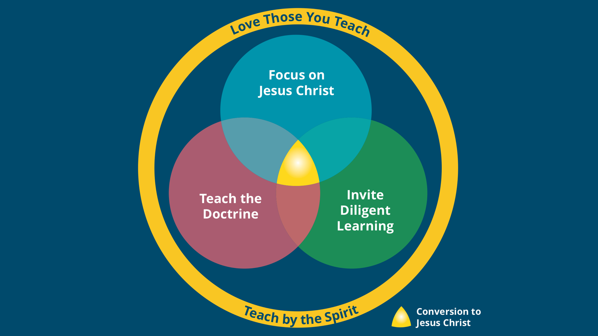

Make a Christlike-Teaching Skill Combination
Each week, pick one skill from each of the five principles above and work on it in your next lesson. If every teacher follows this simple practice, we will greatly improve conversion to Jesus Christ.
Choose each skill yourself, or get a random set you can refresh any time.
Your five skills will appear here.
Copies a link you can save and reopen later — it shows the full description of each skill.